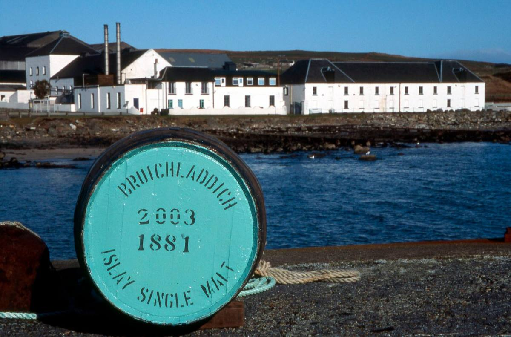

Bruichladdich was built in 1881 by the Harvey brothers, on the shore of Loch Indaal. Much of its Victorian kit is still working, including the open-topped cast-iron mash tun from 1881.
It was mothballed in 1994. In 2000 a group of independent investors led by wine merchant Mark Reynier bought it, legendary Islay distiller Jim McEwan came over from Bowmore to run production, and the stills came back to life in 2001. Rémy Cointreau bought it in 2012.
Bruichladdich makes three whiskies. The Bruichladdich range is unpeated and built on Scottish barley, some of it grown on Islay farms. Port Charlotte is heavily peated, at around 40 ppm, and is named after the village down the road. Octomore is the extreme one, with some releases peated past 300 ppm.
It also makes The Botanist gin, flavoured with 22 botanicals hand-foraged on Islay and distilled in a squat old Lomond still nicknamed Ugly Betty.
While you're there: on a fine day, take a dram from the shop to the shore across the road. The view back over Loch Indaal to Bowmore is one of the best on the island.
